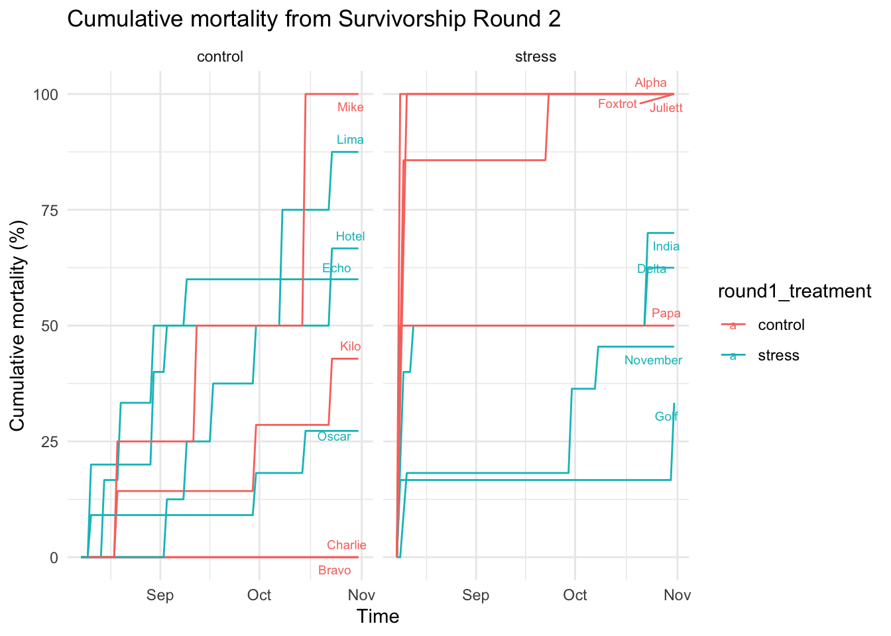

Code
# Load packages
library(ggplot2)
library(ggrepel)
library(dplyr)
Attaching package: 'dplyr'The following objects are masked from 'package:stats':
filter, lagThe following objects are masked from 'package:base':
intersect, setdiff, setequal, unionCode
library(tidyr)
# Load data
round2 <- read.csv("../../../../../Data/Pacific_oysters/2024_11_09_Survivorship_Round2.csv")
# Data munging
# Convert mort_date to Date format
round2 <- round2 %>%
mutate(mort_date = as.Date(mort_date, format="%m/%d/%Y"))
# Calculate the total number of original samples in each group
group_totals <- round2 %>%
group_by(group) %>%
summarise(total_samples = n(), .groups = 'drop')
# Generate a sequence of dates covering the entire period
date_seq <- seq(min(round2$mort_date, na.rm = TRUE), max(round2$mort_date, na.rm = TRUE), by = "day")
# Add the date before start of experiment, to show original 0% mortality
date_seq <- c(as.Date("2024-08-08"), date_seq)
# Create a data frame with all combinations of treatment group and date
round2_full <- expand.grid(group = unique(round2$group), date = date_seq)
# Aggregate the data by group and date to get daily death counts
round2_daily <- round2 %>%
group_by(group, mort_date) %>%
summarise(deaths = n(), .groups = 'drop') %>%
rename(date = mort_date)
# Join the aggregated daily deaths with the full date range
round2_cumulative <- round2_full %>%
left_join(round2_daily, by = c("group", "date")) %>%
mutate(deaths = ifelse(is.na(deaths), 0, deaths)) %>% # Replace NA with 0 for days with no deaths
group_by(group) %>%
arrange(date) %>%
mutate(cumulative_deaths = cumsum(deaths)) %>%
ungroup()
# Join with group totals to calculate cumulative deaths as a percentage
round2_cumulative <- round2_cumulative %>%
left_join(group_totals, by = "group") %>%
mutate(cumulative_death_percentage = (cumulative_deaths / total_samples) * 100)
# retrieve metadata associated with groups
metadata <- round2 %>%
select(group, cattle_tag, round1_treatment, round2_treatment) %>%
distinct()
round2_cumulative_metadata <- round2_cumulative %>%
left_join(metadata, by = "group")
# Plot
labels_df <- round2_cumulative_metadata %>%
group_by(group) %>%
filter(date == max(date)) %>%
ungroup()
ggplot(round2_cumulative_metadata, aes(x = date, y = cumulative_death_percentage, group = group, color = round1_treatment)) +
#geom_point() +
geom_line() +
facet_wrap(~ round2_treatment) +
geom_text_repel(data = labels_df, aes(label = group), size = 2.5, nudge_x = 0.3, check_overlap = TRUE) +
labs(title = "Cumulative mortality from Survivorship Round 2",
x = "Time",
y = "Cumulative mortality (%)") +
theme_minimal()Warning in geom_text_repel(data = labels_df, aes(label = group), size = 2.5, :
Ignoring unknown parameters: `check_overlap`